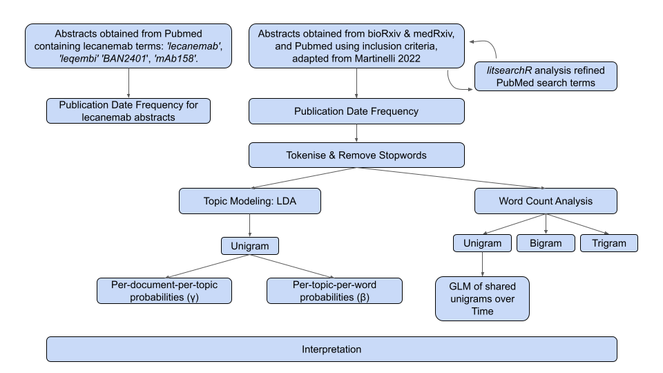
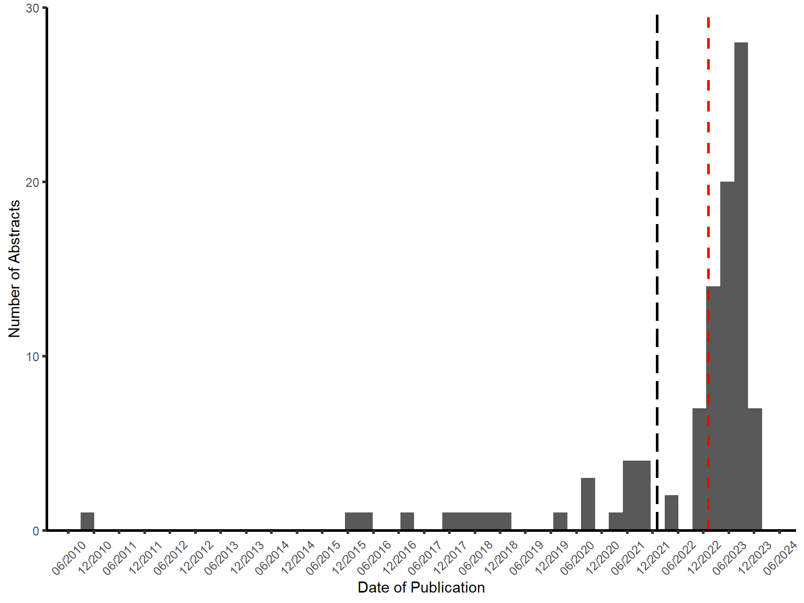

Impact of novel Alzheimer’s disease drug discovery on the research field using text mining and topic models
Abstract
Every year thousands of scientific articles are published concerning the chronic neurodegenerative disease and leading cause of dementia, Alzheimer’s disease (AD). Currently there are no treatments that cure AD, however recently the anti-amyloid immunotherapy lecanemab has been granted accelerated approval by the FDA. It can be hard highlighting current research in the field which enable treatment breakthroughs as disseminating information into a systematic review can be time consuming and laborious. Using text mining, we found 6744full abstract texts containing the MeSH term “Alzheimer’s Disease” from PubMed and preprint databases bioRxiv and medRxiv published between 01-01-2022 and 30-12-2023. Texts were tokenised and cleaned then allocated to two corpus types, determined based on accelerated approval date for lecanemab, 06-01-2023. Ten-topic latent Diurich Allocation (LDA) models were created for unigrams in each corpus. Despite the
Introduction
Alzheimer’s Disease
Alzheimer’s disease (AD) is a chronic neurodegenerative disease affecting over 55 million people worldwide, and is the most common cause of dementia (1). The predominant symptoms of AD usually manifest after the age of 65 ad inclue cognitive impairment, physical and emotional difficulties (2). Physiological changes in the brain develop before the onset of symptoms which makes it difficult to find treatments when many patients are diagnosed with AD after irreversible neuronal death and hippocampal damage. AD has multiple risk factors suggesting age, epigentic modifiers, infectious agents, and diet all contribute to the development of AD (3,4).
The mechanisms determing the progression of AD are not fully understood, but the accumulation of abnormal protein aggregates, including amyloid-beta plaques and neurofibrillary tau tangles, are frequently found in the brains of patients with AD (5,6). This leads to disruptions in neuronal signalling pathways and can result in brain atrophy. AD diagnosis requires the presence of both amyloid and tau pathologies, and signs of neuroinflammation, neuronal death and brain atrophy (7). Biomarkers of neuroinflammation can be found in cerebrospinal fluid (CSF) and plasma (8) and brain atrophy can be measured with techniques such as magnetic resonance imaging (9).
Treatments for AD
There are currently no therapies or interventions that can cure AD, but several treatments exist that can modify the course of the disease, alleviate symptoms, and enhance the overall quality of life for patients. Acetylcholinesterase inhibitors (AchE) aim to increase the levels of the neurotransmitter acetylcholine which are attenuated during the pathologies of AD and associated with the loss of cholinergic neurons [(10)]. Whilst AchEs provide many benefits to treat the symptoms of AD, they do not delay or stop the progression of the disease and the effects may only last for 12-24 months [(11)]. Mementine is a NMDA receptor antagonist [(12)].
A recent comprehensive review by (13) identified a shift in clinical trial research, which highlighted more Phase I studies being conducted and more Phase III trials involving anti-amyloid therapies. These trials are involving more patients with early onset AD and mild cognitive impairment (MCI) to help develop preventative therapies. Global estimates for people living with preclinical AD or positive for AD pathology biomarkers were 69 and 315 million, respectively [(14)], therefore increasing research focus on these patient populations is imperative to slow the progression of the disease.
Two drugs have recently been granted approval by the United States Food and Drug Administration (US FDA) which target the pathophysiologies of AD; aducanumab and lecanemab (15,16). These treatments are human monoclonal immunotherapies which aim to target and reduce the beta-amyloid protein aggregates in the brain by binding to its various forms in the amyloid-beta pathway. There are four more anti-amyloid monoclonal antibody treatments which have undergone or are currently in Phase III clinical trials (17). For this study, we will focus on lecanemab, the most recent AD treatment to undergo accelerated approval by the FDA, which was fully approved for treatment in early AD on the 6th July 2023. We will not analyse historical records, due to the nature of our research focusing on recent AD treatment approvals and their influence on the research field.
Text Mining and Topic Modelling in AD Research
Thousands of articles are published every year concerning AD, so focusing on early-stage drug discovery could lead to more literature and clinical findings being identified. Systematic reviews and meta-analyses however, are time consuming and labour intensive, and pose a significant challenge to updating the current understandings in the research literature (18). Topic modelling, a prominent text mining technique, can find patterns and relationships within natural language data, and could provide an automated and unbiased overview of research text. The most common topic modelling method is Latent Dirichlet Allocation (LDA) which assumes, for unstructured text data like research publication, that each document is made up of a number of topics and that each topic is made up of a collection of words (19). Each LDA topic is represented as a probability of words within a topic and a probability of topics within each document, which each follow a Dirichlet distribution.
In silico topic modelling has been used for various applications relating to AD, including describing the research landscape. (20), identifying novel biomarkers (21), and drug repurposing (22). (20) performed a nine-topic LDA model and identified five mechanistic themes, one topic relating to AD diagnosis and three concerning treatments. To the best of my knowledge, no studies have explored the change to the AD research landscape with the emergence of newly approved immunotherapy treatments.
Aims and Hypotheses
Vast quantities of literature are being published annually concerning AD. In this study we aim to comprehensively characterise AD research through the period that the AD immunotherapy drug, lecanemab, underwent accelerated approval. We hypothesise that new treatments targeting the pathophysiological changes in patients with AD, represent a major paradigm shift in AD research. We propose that LDA topic models can help identify distinct thematic changes in the literature. We aim to understand whther the methods to summarise the latest research are crucial for making significant stides in understanding the complexities of this disease and finding new ways to treat AD. Furthermore, this method could be translated to other neurodegenerative disease and to study the impact of emerging novel treatment options.
Methods
A full summary of the methodology is provided in Figure 1. All data analysis and visualisations were done in R version 4.3.2 using tidyverse packages (23) unless otherwise stated.
Data Acquisition
Due to accessing constraints, abstracts represent the only document content for this study. Titles, full abstract text, and publication date were obtained from the National Center for Biotechnology Information (NCBI) datasbase, PubMed, using the inclusion criteria described in Table 1, and accessed through Rismed (24) on 18-02-2024. Results from PubMed were combined with publications from the preprint data sources, bioRxiv and medXriv, using medrxiv (medrxivr?). An additional dataset was generated for abstracts containing the associated terminology for the AD drug lecanemab: ‘lecanemab’, ‘leqembi’ ‘BAN2401’, and ‘mAb158’. The diversity of entries into the PubMed database ensures that the contents are representative and studies are reliable as they are obtained from multiple sources. Entries are assigned Medical Subject Headings (MeSH) which identify health-related terms within each document, therefore classifying articles according to their subject nature which reduces potential interpretive bias.
| Criteria | Filter Applied |
|---|---|
| MeSH Term | ‘Alzheimer’s Disease’ |
| Title and/or Abstract Text | ‘Alzheimer’s Disease’ ‘alzheimer’ ‘AD’ |
| Article Type | “Books” “Case Reports” “Clinical Study” “Clinical Trial” “Controlled Clinical Trial” “Meta-analysis” “Randomised Controlled Trial” “Review” “Systematic Review” |
| Publication Date | 1st January 2022 to 1st January 2024 inclusive |
| Language | English |
litsearchR
To reassure us that the PubMed search query encapsulated all literature, litsearchr package was used to expand the search terms (25). Citations from PubMed results using the previous search criteria in Table 1 were read into R. The combined unique keyword and titles, as not all articles have keywords, for each result were collected. To ensure only the most relevant terms were searched, stop words were removed, as previously described, and the minimum frequency of words for keywords and title was set to n = 50 and n = 75, respectively. A matrix of each word in each article was created and the potential search terms were ranked with create_network and strength (26) from the igraph package (27). The change point method calculated the optimal cutoff positions based on the trend in sharp changes for strength.
Data Preprocessing
Abstracts and their metadata were categorised into two corpuses based on their publication date relative to the date of lecanemab’s accelerated early approval, 06-01-2023 (16). Full abstract text was tokenised into single words using the unnest_tokens function of the tidytext package (28) (Figure 2 (a)). The same function was used for tokenising to bigrams and trigrams, using n = 2 and n = 3 respectively. Stop words from the tidytext package (28) combined with the personalised words frequent to the unigram analysis, “alzheimer’s” and “ad”, were then removed (Figure 2 (b)). To prevent the different spellings of the same phrase from being counted multiple times, similar bigrams and trigrams were mapped to the same variable. For example, ‘amyloid β, ‘beta amyloid’, and ‘amyloid aβ’ were all mapped to ‘amyloid beta’, and ‘mild cognitive impairments’ and ‘cognitive impairment mci’ were mapped to ‘mild cognitive impairment’. Additionally, for bigrams originating from trigrams, mapping to the first two terms was used or mapping to an acronym, for example ‘central nervous’, ‘system cns’ were mapped to’cns’.


Data Analysis
Metadata Analysis
The number of relevant abstracts published per month were visualised as well as the frequency of dates of publications for papers containing the associated terminology for the AD drug lecanemab were also obtained.
Term Frequency
N-gram Frequency Analysis
After tokenisation, the top 20 most frequent unigrams were determined for each dataset. The top 20 most frequent bigrams and trigrams were also determined due to many unigrams being associated with pairs or triplets of words. For example, “mild cognitive impairment” relates to a neurological condition, whereas the words “mild”, “cognitive” and “impairment” have ambiguous connotations individually.
Term Usage Over Time
The distribution of terms used over 1000 times from the unigram analysis was visualised. Generalised linear model (GLM) was used to determine whether there was a significant change in word usage over the months.
Topic Modelling
A document term matrix (dtm) was constructed for each dataset, indicating each word’s term frequency (tf), which is a measure of how often a word appears in each abstract To determine if a statistical model could distinguish between the text corpuses surrounding the accelerated approval date of lecanemab, a two-topic Latent Dirich Allocation (LDA) model (19) was applied to the dtm using topicmodels (29). The per-document-per-topic probabilities (γ) was extracted to show the proportion of words generated in each topic and how often these words appear in either corpuses.
Two ten-topic LDA models were also created, one for each of the pre-leca and post-leca text corpuses, to determine the most frequent topics, where an arbitrary topic number (k) of ten was chosen. The per-topic-per-word probabilities (β) were extracted and the top 10 terms most commonly found in each topic were visualised. In each model the abstracts are considered mixtures of topics and each topic is considered a mixture of words. As a lot of the most common words may appear as bigrams or trigrams in the text corpuses, the per-topic-per-bigram and per-topic-per-trigram probabilities with the top 10 most common bigrams and trigrams were also visualised with two ten-topic LDA models for both text corpuses.
Results and Discussion
A full summary of the results is found in Figure 3.

Search Query Refinement Identified the Term ‘alzheimer’
Out initial search query was refined using litsearchr (25) to determine the most important terms to the articles ranked by their strength (Figure 4). We disregarded ‘alzheimer’s disease’ as this MeSH term was included in the original search query, but we updated the PubMed search query with ‘alzheimer’ (Table 1). We omitted the unigram ‘disease’ as it was too broad and may have encapsulated articles concerning other irrelevant neurodegenerative diseases into our query.

AD Research Publication Frequency is not Associated with Lecanemab Approval
This study found 6744 papers that were published between 01-01-2022 and 30-12-2023 that met the inclusion criteria in Table 1. We aimed to identify whether there was a change in the Lecanemab received accelerated and traditional approval in 2023 (16,30), however we did not find any variablitiy in the overall frequency of literature published containing the MeSH term ‘Alzheimer’s Disease’ Figure 5 (a). This was surprising as the frequency of publications containing the terms associated with the AD drug lecanemab exponentially increased in 2023 Figure 5 (b).
What is the increase in 03/2023?
Write something about how lecanemab is a new drug and the literature is increasing.but too early to notice a increase in literature. Not the only drug. We therefore wanted to investigate whether there was a


The two topic LDA model did not distinguish a difference in topics in the literature around the accelerated approval of Lecanemab, with no significant difference between the per-document-per-topic probabilities (γ) (Figure 6). This suggests that the content of the abstracts did not change significantly from the time before to after the accelerated approval of lecanemab.

N-gram Analysis
Despite the full abstract dataset not significantly splitting into two distinct topics, we aimed to suggest this was because the language was very similar between the two corpses. We therefore aimed to explore the most common n-grams frequencies. The 15 most frequent unigrams, bigrams and trigrams along with the distribution by month of the top 14 shared most frequent unigrams for both corpuses are shown in Figure 7. ‘Disease’ is the most frequent unigram in both corpuses (Figure 7 (a)) and is associated with ‘neurodegenerative disease’, ‘Parkinson’s disease’, and ‘Huntington’s disease’ which are among the most frequent bigrams and trigrams (Figure 7 (b); Figure 7 (c)). No significant difference between the word frequencies over time was observed for the most frequent unigrams shared between the two corpuses (Figure 7 (d)).


Topic Modelling
Potential increase in tau research after lecanemab accelerated approval.
The topics ‘Treatments’, ‘AD Diagnosis’, ‘Genetic Risk’, ‘Molecular Pathology’, ’Study Terminology’ and ‘Cellular Pathology’ were observed in abstracts before and after the accelerated approval of lecanemab Figure 8.
Topics containing study terminology were common to both corpuses, however the unigram ‘placebo’ was unique to the later corpus. This could suggest an increase in the number of randomised clinical trials (RCT) after lecanemab received accelerated approval as these trials usually involve a placebo-control. This is consistent with the trends observed in (13) which suggest an increase in Phase III clinical trials for anti-amyloid therapies and encompasses the traditonal approval date of lecanemab by the FDA in July 2023 from the Clarity AD clinical trial (30). Placebos are used when there is no known or FDA-approved therapy that can be tolerated by patients, therefore as AD does not have a standard of care treatment to cure the disease, a placebo may be used in RCTs.


We aimed to see whether there had been a change in the terms found in similar topics between the two corpuses. There was an increase in the beta-value for the terms in the ‘Molecular Pathology’ topic after the accelerated approval of lecanemab, specifically for the terms:’tau’, ’amyloid’, and ‘aβ’. This suggests these unigrams were more associated with topics in the latter corpus.
The term ‘insulin’ was not found in the later corpus Figure 8 (b), however ’type 2 diabetes’ was one of the most common trigrams for both corpuses (Figure 7 (c)). AD has been referred to as type 3 diabetes due to the rapid growth of literature concerning brain insulin resistance and experimental evidence has shown insulin sensitiser treatments may help attenuate learning deficits (31–34). Many epidemiological studies have suggested T2DM may be increasing the risk of AD, leading to the lower brain insulin levels resulting in decreased clearance of amyloid-beta (35,36). Despite this growing area of research, observations between nondemented participants and AD patients with T2DM have not been able to show a significant difference in amyloid accumulation (37). Whilst we cannot conclude from our results whether this suggests a shift in research focusing on T2DM and its metabolic link to AD, we have observed that literature around the approval of lecanemab does concern multiple metabolic and immune changes relating to AD.
Increase in beta values for tau and amyloid
Limitations
Due to our search strategy, a lot of papers contain the MeSH term ‘Alzheimer’s disease’ may have been mentioned as a collective with other neurodegenerative diseases, therefore attributing to the high frequency for the bigrams and trigrams ‘huntington’s disease’, ‘parkinson’s disease’ and ‘amylotropic lateral sclerosis’ (Figure 7 (b) ; Figure 7 (c)). MeSH terms are added manually to articles in PubMed, therefore there could also be a bias when authors add these to their publications. We tried to avoid this by filtering the titles and abstracts to also contain the term ‘alzheimer’s disease’, ‘ad’ or ‘alzheimer’. Similarly when MeSH terms were not available for the bioRxiv and medRxv databases, we used a similar search strategy to filter titles and abstraction to contain the term ‘alzheimer’s disease’ or ‘alzheimer’, or ‘ad’ and ‘alzheimer’s disease’. Whilst this filtering would have biased our dataset as abstracts not containing these search terms were ommitted, we were still able to gain a large dataset of 6744 abstracts to analyse.
One reason for there not being any statistical significance between the per-document-per-topic probabilities could be due to the time frame used for the analysis not being long enough to account for a change in the research landscape. Previous studies have used a five-year time period to detect topics in AD literature (20), therefore research topics may not be changing in our two-year period. This suggests that the topics in the period after the accelerated approval of lecanemab were not different to the topics in the year before lecanemab was approved. There may be a difference comparing the literature after lecanemab approval and a larger period of time before approval, or if we followed up of the literature for several years after the lecanemab approval.
We only used abstracts written in English, so we may be missing abstracts that have not been translated from other languages and concern AD.
Conclusion
The results of this study suggest that the introduction of lecanemab has not had a significant impact on the research landscape of Alzheimer’s disease in the year after the accelerated approval. LDA
Acknowledgements
I would like to thank my supervisor Emma Rand for her constant support and guidance throughout my project. I would also like to dedicate this project to my late granddad Alan Scrimshire who passed away on the 31st March 2023 after fighting a five year battle with Alzheimer’s Disease. I hope this project highlights the complexity of the disease and the vast efforts being undertaken to find a cure.
References
1.
World Health Organization. Dementia. https://www.who.int/news-room/fact-sheets/detail/dementia; 2023.
2.
2023 Alzheimer’s disease facts and figures. 2023 alzheimer’s disease facts and figures. Alzheimers Dement. 2023 Apr;19(4):1598–695.
3.
A Armstrong R. Risk factors for alzheimer’s disease. Folia Neuropathol. 2019;57(2):87–105.
4.
Henderson AS. The risk factors for alzheimer’s disease: A review and a hypothesis. Acta Psychiatr Scand. 1988 Sep;78(3):257–75.
5.
Villemagne VL, Burnham S, Bourgeat P, Brown B, Ellis KA, Salvado O, Szoeke C, Macaulay SL, Martins R, Maruff P, Ames D, Rowe CC, Masters CL, Australian Imaging Biomarkers and Lifestyle (AIBL) Research Group. Amyloid \(\beta\) deposition, neurodegeneration, and cognitive decline in sporadic alzheimer’s disease: A prospective cohort study. Lancet Neurol. 2013 Apr;12(4):357–67.
6.
Iaccarino L, Tammewar G, Ayakta N, Baker SL, Bejanin A, Boxer AL, Gorno-Tempini ML, Janabi M, Kramer JH, Lazaris A, Lockhart SN, Miller BL, Miller ZA, O’Neil JP, Ossenkoppele R, Rosen HJ, Schonhaut DR, Jagust WJ, Rabinovici GD. Local and distant relationships between amyloid, tau and neurodegeneration in alzheimer’s disease. Neuroimage Clin. 2018;17:452–64.
7.
Garcı́a-Morales V, González-Acedo A, Melguizo-Rodrı́guez L, Pardo-Moreno T, Costela-Ruiz VJ, Montiel-Troya M, Ramos-Rodrı́guez JJ. Current understanding of the physiopathology, diagnosis and therapeutic approach to alzheimer’s disease. Biomedicines. 2021 Dec;9(12).
8.
Janeiro MH, Ardanaz CG, Sola-Sevilla N, Dong J, Cortés-Erice M, Solas M, Puerta E, Ramı́rez MJ. Biomarcadores en la enfermedad de alzheimer. Advances in Laboratory Medicine / Avances en Medicina de Laboratorio. 2021 Mar;2(1):39–50.
9.
Odusami M, Maskeliūnas R, Damaševičius R, Krilavičius T. Analysis of features of alzheimer’s disease: Detection of early stage from functional brain changes in magnetic resonance images using a finetuned ResNet18 network. Diagnostics (Basel). 2021 Jun;11(6).
10.
Colović MB, Krstić DZ, Lazarević-Pašti TD, Bondžić AM, Vasić VM. Acetylcholinesterase inhibitors: Pharmacology and toxicology. Curr Neuropharmacol. 2013 May;11(3):315–35.
11.
Courtney C, Farrell D, Gray R, Hills R, Lynch L, Sellwood E, Edwards S, Hardyman W, Raftery J, Crome P, Lendon C, Shaw H, Bentham P, AD2000 Collaborative Group. Long-term donepezil treatment in 565 patients with alzheimer’s disease (AD2000): Randomised double-blind trial. Lancet. 2004 Jun;363(9427):2105–15.
12.
Rogawski MA, Wenk GL. The neuropharmacological basis for the use of memantine in the treatment of alzheimer’s disease. CNS Drug Rev. 2003 Sep;9(3):275–308.
13.
Huang L-K, Kuan Y-C, Lin H-W, Hu C-J. Clinical trials of new drugs for alzheimer disease: A 2020–2023 update. J Biomed Sci. 2023 Oct;30(1):83.
14.
Gustavsson A, Norton N, Fast T, Frölich L, Georges J, Holzapfel D, Kirabali T, Krolak-Salmon P, Rossini PM, Ferretti MT, Lanman L, Chadha AS, Flier WM van der. Global estimates on the number of persons across the alzheimer’s disease continuum. Alzheimers Dement. 2023 Feb;19(2):658–70.
15.
Center for Drug Evaluation, Research. FDA’s decision to approve new treatment for alzheimer’s disease. https://www.fda.gov/drugs/our-perspective/fdas-decision-approve-new-treatment-alzheimers-disease; FDA; 2023.
16.
Office of the Commissioner. FDA grants accelerated approval for alzheimer’s disease treatment. https://www.fda.gov/news-events/press-announcements/fda-grants-accelerated-approval-alzheimers-disease-treatment; FDA; 2023.
17.
Cummings J, Zhou Y, Lee G, Zhong K, Fonseca J, Cheng F. Alzheimer’s disease drug development pipeline: 2023. Alzheimers Dement. 2023 May;9(2):e12385.
18.
Higgins JPT. Cochrane handbook for systematic reviews of interventions. 2nd ed. Higgins J, Thomas J, editors. Hoboken, NJ: Wiley-Blackwell; 2019. (Wiley cochrane series).
19.
Blei DM, Ng AY, Jordan MI. Latent dirichlet allocation. https://www.jmlr.org/papers/volume3/blei03a/blei03a.pdf?ref=https://githubhelp.com; 2003.
20.
Martinelli DD. Evolution of alzheimer’s disease research from a health-tech perspective: Insights from text mining. International Journal of Information Management Data Insights. 2022 Nov;2(2):100089.
21.
Greco I, Day N, Riddoch-Contreras J, Reed J, Soininen H, Kłoszewska I, Tsolaki M, Vellas B, Spenger C, Mecocci P, Wahlund L-O, Simmons A, Barnes J, Lovestone S. Alzheimer’s disease biomarker discovery using in silico literature mining and clinical validation. J Transl Med. 2012 Oct;10:217.
22.
Nian Y, Hu X, Zhang R, Feng J, Du J, Li F, Bu L, Zhang Y, Chen Y, Tao C. Mining on alzheimer’s diseases related knowledge graph to identity potential AD-related semantic triples for drug repurposing. BMC Bioinformatics. 2022 Sep;23(Suppl 6):407.
23.
Wickham H, Averick M, Bryan J, Chang W, McGowan LD, François R, Grolemund G, Hayes A, Henry L, Hester J, Kuhn M, Pedersen TL, Miller E, Bache SM, Müller K, Ooms J, Robinson D, Seidel DP, Spinu V, Takahashi K, Vaughan D, Wilke C, Woo K, Yutani H. Welcome to the tidyverse. 2019;4:1686.
24.
Kovalchik S. RISmed: Download content from NCBI databases. 2021;
25.
Grames EM, Stillman AN, Tingley MW, Elphick CS. An automated approach to identifying search terms for systematic reviews using keyword co‐occurrence networks. Methods Ecol Evol. 2019 Oct;10(10):1645–54.
26.
Barrat A, Barthélemy M, Pastor-Satorras R, Vespignani A. The architecture of complex weighted networks. Proc Natl Acad Sci U S A. 2004 Mar;101(11):3747–52.
27.
Csardi G, Nepusz T. The igraph software package for complex network research. 2006;Complex Systems:1695.
28.
Silge J, Robinson D. Tidytext: Text mining and analysis using tidy data principles in R. 2016;1.
29.
Grün B, Hornik K. Topicmodels: An R package for fitting topic models. J Stat Softw. 2011 May;40:1–30.
30.
Office of the Commissioner. FDA converts novel alzheimer’s disease treatment to traditional approval. https://www.fda.gov/news-events/press-announcements/fda-converts-novel-alzheimers-disease-treatment-traditional-approval; FDA; 2023.
31.
Monte SM de la, Wands JR. Alzheimer’s disease is type 3 diabetes-evidence reviewed. J Diabetes Sci Technol. 2008 Nov;2(6):1101–13.
32.
Reger MA, Watson GS, Green PS, Wilkinson CW, Baker LD, Cholerton B, Fishel MA, Plymate SR, Breitner JCS, DeGroodt W, Mehta P, Craft S. Intranasal insulin improves cognition and modulates beta-amyloid in early AD. Neurology. 2008 Feb;70(6):440–8.
33.
Pedersen WA, McMillan PJ, Kulstad JJ, Leverenz JB, Craft S, Haynatzki GR. Rosiglitazone attenuates learning and memory deficits in Tg2576 alzheimer mice. Exp Neurol. 2006 Jun;199(2):265–73.
34.
Reger MA, Watson GS, Frey WH 2nd, Baker LD, Cholerton B, Keeling ML, Belongia DA, Fishel MA, Plymate SR, Schellenberg GD, Cherrier MM, Craft S. Effects of intranasal insulin on cognition in memory-impaired older adults: Modulation by APOE genotype. Neurobiol Aging. 2006 Mar;27(3):451–8.
35.
Gasparini L, Gouras GK, Wang R, Gross RS, Beal MF, Greengard P, Xu H. Stimulation of beta-amyloid precursor protein trafficking by insulin reduces intraneuronal beta-amyloid and requires mitogen-activated protein kinase signaling. J Neurosci. 2001 Apr;21(8):2561–70.
36.
Ott A, Stolk RP, Harskamp F van, Pols HA, Hofman A, Breteler MM. Diabetes mellitus and the risk of dementia: The rotterdam study. Neurology. 1999 Dec;53(9):1937–42.
37.
Cholerton B, Baker LD, Montine TJ, Craft S. Type 2 diabetes, cognition, and dementia in older adults: Toward a precision health approach. Diabetes Spectr. 2016 Nov;29(4):210–9.